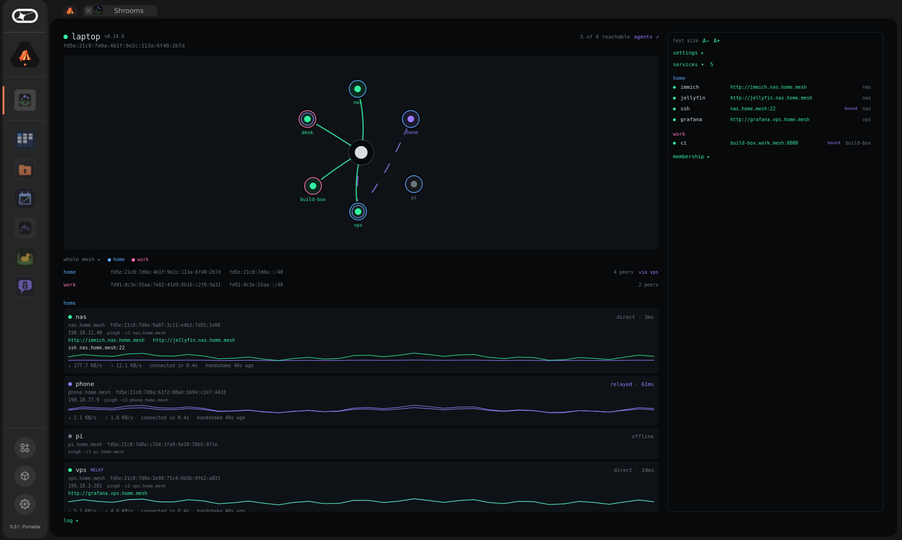

shrooms, in one page
A private network between your own devices — laptop, phone, home server, a VPS — that works from anywhere, and that nobody runs: no coordination server, no account, no company that can see its shape or switch it off.
shrooms.vpavlin.xyz · github.com/vpavlin/shrooms
What it does for you
Reach home from anywhere
ssh nas.mesh from a café; open
http://immich.nas.mesh on mobile data. Same name, same
address, every network.
The phone is a peer
Not a client of a server: the Android app runs the same core as the daemon, roams between wifi and mobile data, and sits on several meshes.
Separate meshes
Your machines on one, the family's on another, a project shared with friends on a third — separate addresses, no traffic or service route between them. Shrooms Agents doesn't keep them apart yet.
Desktop too
A Logos Basecamp app with the graph, every peer and service, every setting — and, with a Keycard, inviting and removing devices.


How it works
Traffic: WireGuard
Encrypted end to end between your devices, on the most direct path that works — through a relay of yours only when it has to.
Finding each other: gossip
Devices announce themselves, encrypted, on Logos Delivery, a public gossip network nobody owns. It never carries your traffic, and if it is down, existing tunnels keep working.
Membership: credentials
An admin key — a file, or a Keycard — signs each device in for thirty days. Lose a phone: revoke it, and every node drops it.
Addresses are derived, not assigned: a device's address is a hash of its key, inside a prefix that is a hash of the mesh's. Nothing hands them out, so nothing has to be running to keep them.
Start in three steps
Laptop or server (Linux):
sudo bash install.sh init --mesh home --name laptop— one script, from the quick start.Phone (Android): add
apps.vpavlin.xyz/fdroid/repoto F-Droid, install Shrooms.Join:
sudo shrooms inviteon the laptop, scan the QR on the phone. Done.
What it protects, and what it does not
| Protects | Does not |
|---|---|
| Your traffic: WireGuard, end to end, between your own devices. | Your anonymity: a relay sees your IP; the gossip network sees that something publishes. |
| Who is in: admin-signed credentials that expire and can be revoked. | A leaked network key: it still derives the rendezvous topics, so leaking it means rotating. |
| Independence: no server of anyone's to depend on, no account, nothing phoning home. | Audits: it is an experiment, used daily; its one outside audit was by an AI auditing agent, not a security firm. |
Questions people ask
Is it free?
Yes, and open source (Apache-2.0 or MIT). There is no service to pay for because there is no service.
Do I need a server?
Not to start. Two devices where one can be reached — a home machine whose router grants a port mapping, or one on the same network — just work. When both are behind NAT (phone on mobile data, laptop in a café), a reachable member such as a small VPS relays for them, or a relay somebody else runs.
Which platforms?
Linux (any distribution with systemd and docker or podman), Android 8+, and the Logos Basecamp desktop app on Linux. No iOS, macOS or Windows yet — nostr-vpn covers more platforms if you need them today.
How is this different from Tailscale?
Tailscale's coordination server knows every device you own and decides who connects. Here, discovery happens on a public gossip network and membership is signed by a key you hold. The honest comparison covers Nebula, ZeroTier and Yggdrasil too, including where shrooms loses.
What is Logos?
An ecosystem of privacy-first infrastructure. shrooms uses its messaging layer, Logos Delivery, to let devices find each other, and ships as an app for its desktop, Basecamp.
And the coding agents?
Shrooms Agents grows out of the mesh: the Claude Code sessions on your machines, from your phone, with the mesh as the access control.